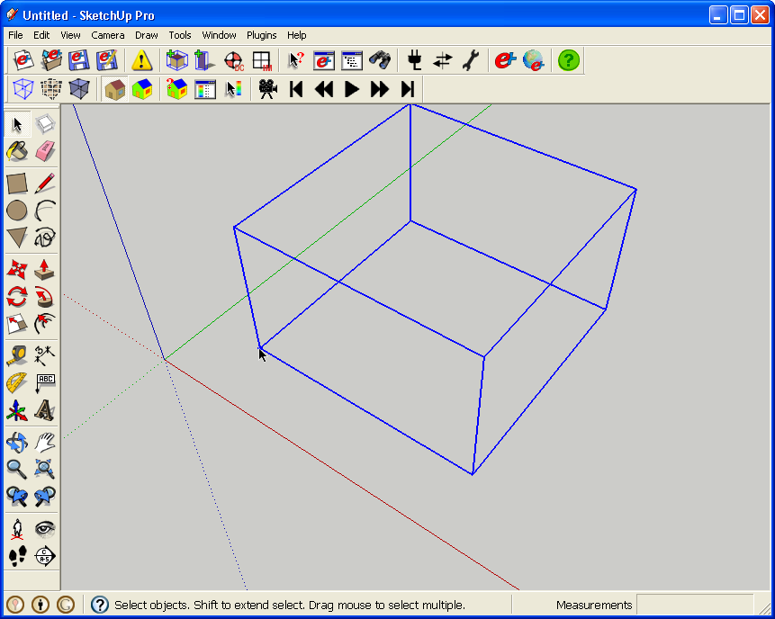
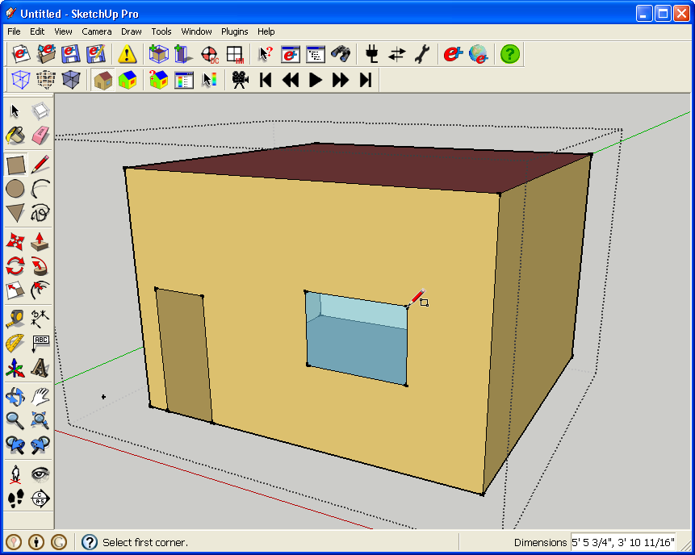
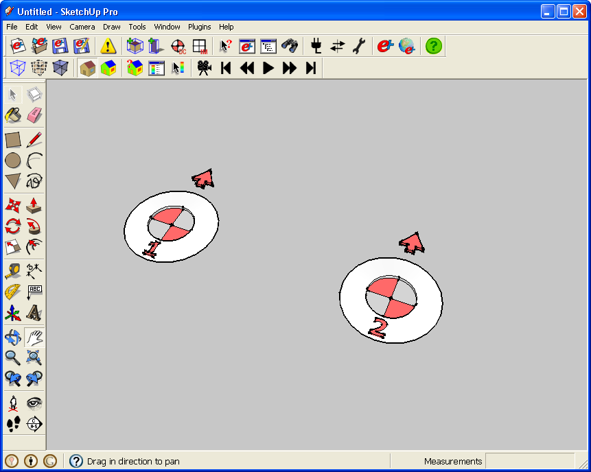
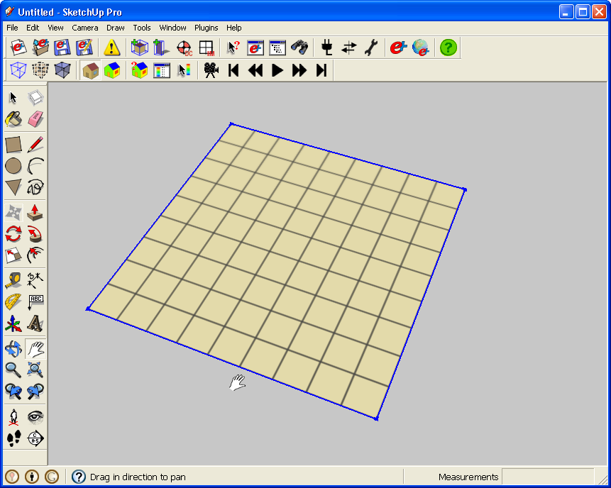
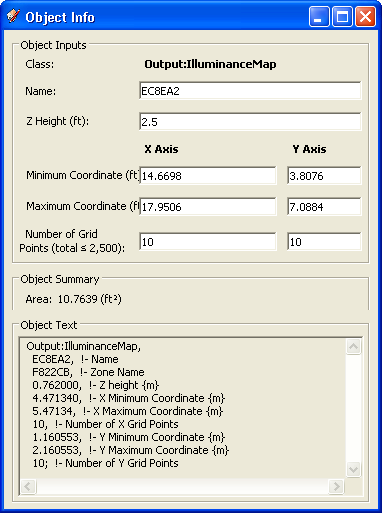
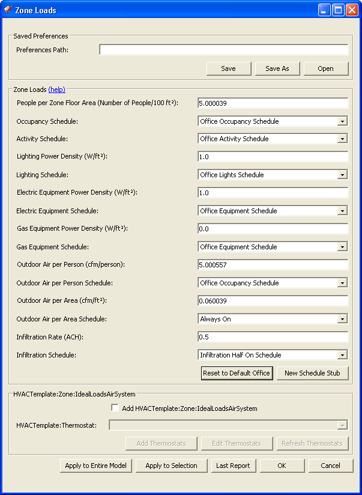
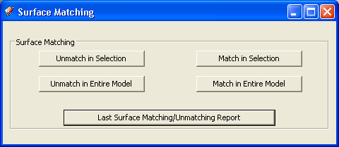

Modeling Tools
 Create a new EnergyPlus Zone Create a new EnergyPlus Zone
 Create a new EnergyPlus Shading Group Create a new EnergyPlus Shading Group
 Add Internal Loads to an EnergyPlus Zone
(New) Add Internal Loads to an EnergyPlus Zone
(New)
Create a new EnergyPlus Daylighting Controls Object
(New)
 Create a new EnergyPlus Illuminance Map Object
(New) Create a new EnergyPlus Illuminance Map Object
(New)
Match Surfaces between EnergyPlus Zones
(New)
Create a new EnergyPlus Zone
The New Zone command activates a tool that enables you to create a new zone. Click anywhere in the view and use the cursor to select a point that will become the new zone origin. You cannot currently change the zone origin in OpenStudio once it is placed. You can change it in the IDF file directly, but this may alter your geometry. An empty SketchUp group highlighted with a blue bounding box will appear. It is anchored at one corner by a construction point.

(Credit: David Goldwasser/NREL)
With the cursor still positioned over the construction point, double-click it to begin editing the zone. Any new SketchUp entities that you draw inside the group with the standard tools (Rectangle, Polygon, Pencil, etc.) will immediately add new EnergyPlus heat transfer surfaces (BuildingSurface:Detailed, FenestrationSurface:Detailed, and Shading:Zone:Detailed) to the input file. Floors, walls, roofs, windows, doors, and attached shading surfaces are all automatically inferred from their tilts and positions relative to other surfaces.

(Credit: David Goldwasser/NREL)
Note: The size of the bounding box is arbitrary. Once the zone group is open for editing, you can draw anywhere within the view and the bounding box will stretch to fit the entities. If you accidentally click outside the zone group and the bounding box disappears, simply click on the construction point at the zone origin again to select the zone group and the bounding box will reappear. Double-click the construction point, or any entity within the group, to open it for editing again.
Note 2: The construction point at the zone origin is used only to hold an empty group open. Once you have drawn some entities inside the group, you can erase the construction point. There is also a hidden construction point in the opposite corner of the bounding box. Select View/Hidden Geometry to show it. You can then delete that construction point. It just makes the bounding box fit more tightly for small zones.
The "Getting Started" tutorial provides more detail about creating zones and shading groups.
Back to Top
Create a new EnergyPlus Shading Group
The New Shading Group command activates a tool that enables you to create a new shading group. Shading groups are not EnergyPlus objects so they are not preserved in the IDF file. They are used only by the plugin to group and isolate detached shading surfaces from the rest of the SketchUp model. This tool works almost identically to the New Zone tool, except that any new SketchUp entities you draw inside the group will immediately add new detached shading surfaces instead of heat transfer surfaces (Shading:Building:Detailed and Shading:Site:Detailed) to the input file.
Back to Top
Create a new EnergyPlus Daylighting Controls Object
(New)
This tool creates a new EnergyPlus Daylighting Control. This consists of a pair of sensors, which by default will be placed at 30 inches above the surface you click on. You can move both sensors via SketchUp tools or the Object Info Window. You can also turn off the second sensor if you want only one, and many attributes can be set that feed information to EnergyPlus. The Glare Calculation Azimuth Angle of View Direction also changes the appearance of the object in OpenStudio. You can have only one Daylighting Control in each zone. To report data from the sensors in EnergyPlus, you also need to include lights, which you can add via the Zone Loads Tool. The following screenshot shows what the Daylighting Controls look like; an image of the Object Information Window shows settings for the Daylighting Controls. The data point for the sensor is at the cross in the middle of the component. The arrow points in the direction of the glare calculation.

(Credit: David Goldwasser/NREL)
 (Credit: David Goldwasser/NREL)
(Credit: David Goldwasser/NREL)
See Adding and Modifying Daylighting Controls for a more extensive tutorial.
Back to Top
Create a new EnergyPlus Illuminance Map Object
(New)
This tool creates a new EnergyPlus Illuminance Map that consists of rectangle with a grid representing the data points. By default it will be placed 30 inches above the surface you click on. You can move and resize the Illuminance Map with the SketchUp Move and Scale Tool and with the Object Information Window. You can have only one Illuminance Map in each zone. To obtain data reported for the map in EnergyPlus, you also need to include a Daylighting Controls Object and lights, which you can add via the Zone Loads Tool. The following screenshot shows what the Illuminance Map looks like; an image of the Object Information Window shows settings for the Illuminance Map.

(Credit: David Goldwasser/NREL)

(Credit: David Goldwasser/NREL)
See Adding and Modifying Illuminance Maps. for a more extensive tutoria.
Back to Top
Add Zone Loads to an EnergyPlus Zone
(New)
You can use the Zone Loads tool to add loads from people, lights, and equipment. You can also address ventilation, air infiltration and HVAC thermostat set points and schedules. You can apply these settings across the entire model, to a specific selection of zones, or to a single zone. The following dialog box shows the data it takes. See Adding Zone Loads to Your Model for a more extensive tutorial.

(Credit: David Goldwasser/NREL)
Back to Top
Match Surfaces between EnergyPlus Zones
(New)
This tool does not draw new geometry, but addresses data connections that have to be made between coplanar surfaces in adjacent zones. Once you have drawn the surfaces, you can use this tool to handle the data connections. Before searching on a large IDF, you can close the Outliner and Object Information windows to expedite the search.

(Credit: David Goldwasser/NREL)
See the Surface Matching Tool for a more extensive tutorial.
Back to Top
|